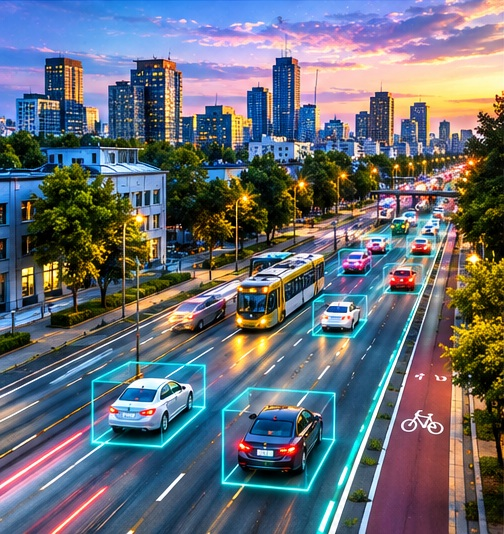

Місто без заторів
Чому додаткова дорога іноді погіршує рух?

Наукова схема

Ви консультуєте місто: бюджет обмежений, а мешканці хочуть швидше діставатися додому. Чи варто будувати дорогу або змінити алгоритм світлофорів?
Коротка теорія
Потік q — кількість автомобілів за одиницю часу; густина k — кількість на одиницю довжини; середня просторова швидкість v. Для однорідного потоку q = kv. Черга зростає, якщо прибуття перевищують пропускну здатність. Моделі нижче дискретні та спрощені: не враховують пішоходів, аварій, реакції всіх водіїв та реальної геометрії доріг.
01. Затор без аварії
На кільцевій дорозі 60 клітинок. Автомобіль займає одну клітинку. На кожному кроці він прискорюється до 5 клітинок, обмежує швидкість вільною відстанню, випадково гальмує з імовірністю p, потім рухається. Усі оновлюються одночасно (модель Нагеля — Шрекенберга).
Горизонталь — положення на кільці, вертикаль — час (зверху вниз). Темні клітинки — автомобілі. Діагональні смуги показують поширення скупчень.
| Авто | p | Середня швидкість | Потік |
|---|
Порівняйте 12, 24 і 42 автомобілі за однакової p. Повторіть один дослід. Яка густина дає найбільший потік, а не швидкість?
02. Світлофор, який думає
Два несумісні напрямки: 720 та 360 авто/год. Цикл 60 с, 6 с втраченого часу, пропускна здатність під час зеленого — 1800 авто/год на напрямок. У моделі автомобілі представлені неперервною масою, прибуття рівномірні.
| Зелений A/B, с | Середня черга A | Середня черга B | Сума |
|---|
Знайдіть налаштування, яке мінімізує сумарну середню чергу. Перевірте щонайменше три варіанти. Чому рівні зелені фази не завжди оптимальні?
03. Парадокс Браеса
4000 водіїв їдуть із S до T. На дорогах S–A та B–T час дорівнює x/100 хв, де x — потік автомобілів. На S–B та A–T час сталий: 45 хв. Додаткова дорога A–B має нульовий час (ідеалізація). Дослідіть різницю між індивідуально вигідним та суспільно оптимальним рішенням.
Решта їде S–B–T. Знайдіть розподіл, за якого жодному водієві не вигідно змінити маршрут (рівновага Вардропа). Порівняйте середній час із закритою дорогою. Потім спробуйте зменшити спільні витрати часу.
04. Наука навколо Вас
З безпечного місця, наприклад із вікна, порахуйте транспорт за однакові інтервали по 60 секунд. Не виходьте на проїзну частину, не фотографуйте номери або людей. Якщо спостереження неможливе, використайте умовні дані: 8, 12, 7, 15, 10.
Чи достатньо п'яти вимірювань для оцінки добового потоку? Що ще варто виміряти, перш ніж змінювати світлофор?
Ваше рішення для міста
Запропонуйте одну зміну організації руху. Наведіть два числові аргументи з експериментів та одне обмеження моделі.
Наукова цікавинка
Хвиля затору може рухатися назад відносно дороги, хоча всі автомобілі їдуть уперед. Це колективний ефект взаємодії, а не рух автомобілів заднім ходом.
Джерела для поглиблення
Nagel, Schreckenberg (1992): модель транспортного потоку
Braess та ін.: парадокс транспортного потоку
Ваше майбутнє у ФТІ
Прикладна математика: оптимізація мереж, моделювання складних систем, аналіз даних і чисельні експерименти.
ФТІ КПІ · ФТІ школа